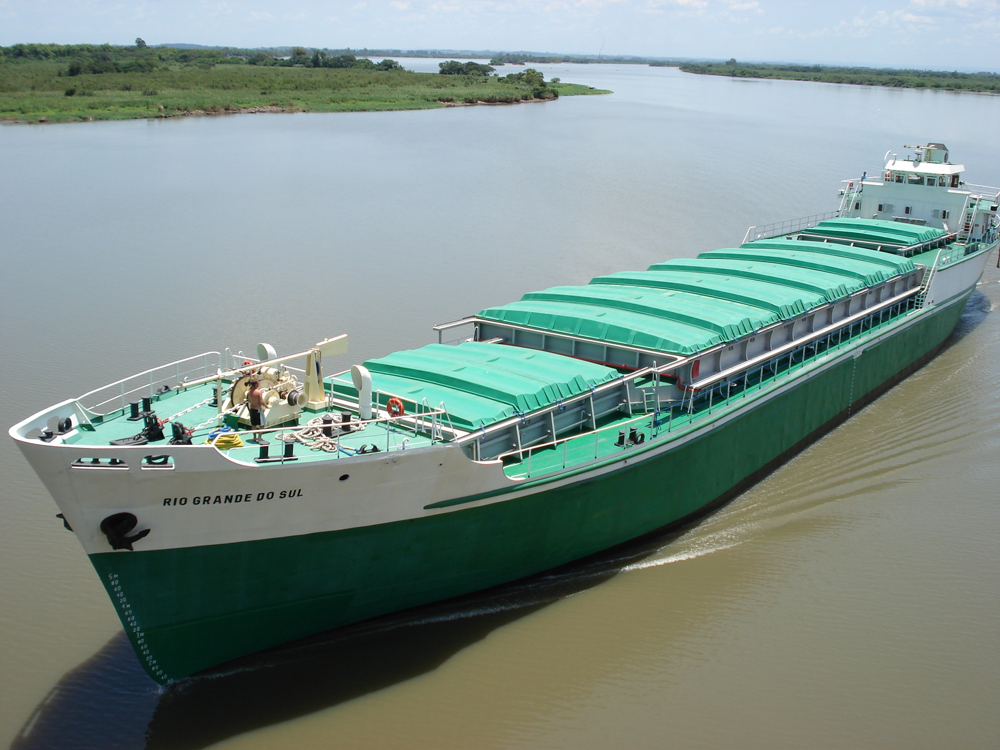
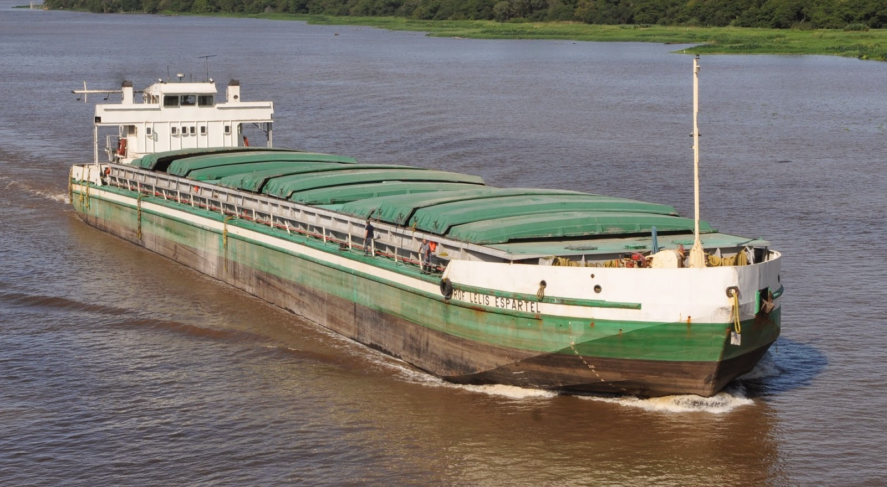
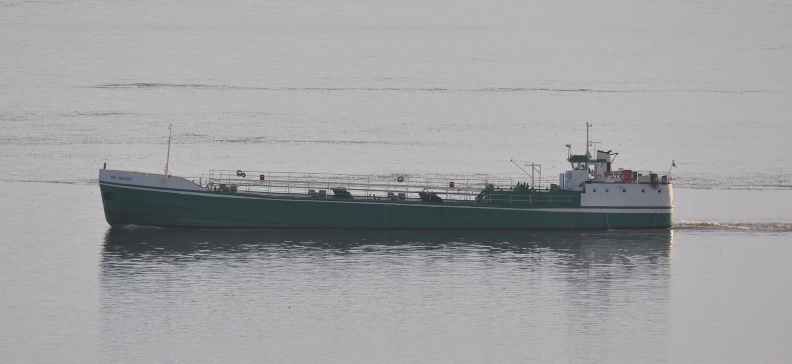

Frota Petrosul
Embarcações
Navegue pela frota e acesse fichas técnicas, fotografias e especificações das embarcações usadas na Lagoa dos Patos.

Frota
Embarcações ativas
Selecione uma embarcação para visualizar fotos e ficha técnica.
6
Embarcações ativas na frota
22.614 t
TPB total combinado da frota
99,78 m
Comprimento máximo — NM Piratini
2 tipos
Graneleiros e navio tanque
Perfil da frota
Frota graneleira com apoio de navio tanque
Com exceção do NT Rio Grande, as embarcações da frota Petrosul são graneleiras, voltadas ao transporte de cargas a granel na Lagoa dos Patos. O navio tanque atende operações compatíveis com derivados e cargas líquidas.
Navios para carga a granel
Embarcações de grande comprimento e baixo calado, projetadas para navegação interior na Lagoa dos Patos. Porões adequados para granéis sólidos como grãos, farelo e fertilizantes.
Configurações de porão
Entre os graneleiros, há embarcações com porões abertos, parcialmente cobertos ou cobertos, permitindo adequar a operação ao tipo de granel e às condições de carregamento.
NT Rio Grande
Única embarcação tanque da frota, destinada ao transporte de derivados e cargas líquidas compatíveis, com sistemas próprios de segurança, contenção e monitoramento.

Navio tanque
NT Rio Grande — operação com derivados
O NT Rio Grande é a embarcação tanque da frota Petrosul, destinada ao transporte de derivados de petróleo e produtos químicos líquidos a granel. Com 57,71 m de comprimento e 1.370 t de porte bruto, opera com sistemas de contenção, válvulas de segurança e equipamentos de monitoramento específicos para cargas perigosas.
A operação com derivados exige certificações adicionais junto à Marinha do Brasil e à ANP, além de tripulação com habilitação específica para manejo de produtos inflamáveis e procedimentos de emergência em caso de derramamento. O NT Rio Grande atende terminais compatíveis ao longo da Lagoa dos Patos.
IRIN PP-6796
57,71 m
1.370 t TPB
Carga líquida
Manutenção e docagem
Frota mantida dentro das exigências regulatórias
A integridade operacional de cada embarcação é garantida por um programa de manutenção preventiva e corretiva, com docagens periódicas realizadas conforme cronograma aprovado pela Diretoria de Portos e Costas da Marinha do Brasil.
Manutenção preventiva
Inspeções regulares de casco, máquinas, sistemas de propulsão, equipamentos de navegação e salvatagem. Troca preventiva de componentes críticos conforme vida útil estimada e recomendações do fabricante.
Sistemas de navegação
Atualização periódica de cartas náuticas digitais da área atendida, sistemas de GPS e AIS, rádios VHF e equipamentos de comunicação de emergência. Todos os sistemas são testados antes de cada operação.
Docagem periódica
Cada embarcação é submetida a docagem completa conforme intervalos regulamentares, com inspeção de casco abaixo da linha d'água, substituição de anodos de sacrifício, revisão do leme e do sistema de propulsão.
Solicitar embarcação
Consulte disponibilidade e condições
Para verificar disponibilidade de embarcações, solicitar cotação de frete ou obter informações técnicas detalhadas sobre a frota, entre em contato com nossa equipe comercial. Se possível, informe os terminais na Lagoa dos Patos, carga e período desejado.
Ir para o formulário de contatoPetrosul no LinkedIn
Localização no Google Maps